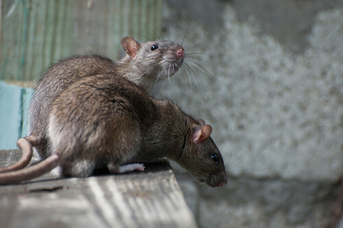

Controle Seguro e Definitivo de Roedores
Os roedores urbanos representam uma das ameaças mais severas à saúde e segurança de moradores e empresas no Rio de Janeiro. Além de transmitirem mais de 200 tipos de doenças graves, os ratos possuem dentes incisivos de crescimento contínuo, o que os obriga a roer incessantemente fios elétricos (uma das maiores causas de curto-circuitos e incêndios prediais), encanamentos, estruturas de madeira e embalagens de alimentos.
A Insetcarioca conta com equipe técnica altamente capacitada para identificar focos, trilhas e tocas, aplicando técnicas de desratização com estações permanentes de iscagem (porta-iscas com chave) que garantem máxima eficácia sem colocar em risco crianças ou animais de estimação.

Doenças Graves Transmitidas por Roedores
A contaminação pode ocorrer por contato direto com o animal, ingestão de água ou alimentos contaminados com fezes e urina, ou pela picada de pulgas presentes nos roedores:
Leptospirose
Transmitida pela bactéria presente na urina dos ratos, altamente frequente no RJ após chuvas e enchentes. Pode levar à insuficiência renal, hepática e óbito.
Hantavirose
Infecção viral aguda transmitida pela inalação de partículas suspensas de urina e fezes secas de roedores em depósitos, forros e sótãos pouco ventilados.
Salmonelose
Bactérias depositadas por roedores nas bancadas de cozinhas, dispensas e prateleiras de supermercados e restaurantes, provocando intoxicação alimentar aguda.
Tifo Murino e Peste
Doenças infecciosas carreadas pela pulga do rato (Xenopsylla cheopis), causando febre alta, dores musculares intensas e manifestações cutâneas.
As 3 Espécies de Roedores Urbanos no Rio de Janeiro
1. Ratazana de Esgoto (Rattus norvegicus)
O maior roedor urbano, pesando até 500g. Excelente nadador e escavador, habita redes de esgoto, margens de rios, terrenos baldios e galerias subterrâneas. Seus ninhos são tocas no solo com várias saídas de emergência.
2. Rato de Telhado ou Rato Preto (Rattus rattus)
Corpo esguio, orelhas grandes e cauda maior que o corpo. Exímio escalador, vive em locais altos como forros de gesso, telhados, sótãos, copas de palmeiras e vigamentos, descendo apenas para buscar alimento e água.
3. Camundongo (Mus musculus)
Pequeno (cerca de 20g), extremamente curioso e adaptado ao interior das edificações. Constrói seus ninhos dentro de fogões, gabinetes de cozinha, motores de freezers e gavetas, consumindo pequenas porções de alimentos variados.
Metodologia Profissional da Insetcarioca
Nossa estratégia de controle de roedores combina medidas preventivas e corretivas:
-
Mapeamento Perimetral e Pontos Críticos: Identificação de fontes de água, alimento, abrigo e vias de acesso (buracos, ralos sem tela, frestas sob portas).
-
Instalação de Porta-Iscas com Chave de Segurança: Estações plásticas de alta durabilidade fixadas nas paredes externas e rotas de passagem, invioláveis para animais de estimação e crianças.
-
Raticidas Anticoagulantes de Dose Única: Blocos extrusados parafinados resistentes à umidade e chuva. Uma única ingestão é suficiente para eliminar o roedor.
-
Ação Secante e Sem Odor Excessivo: A morte ocorre dias após a ingestão, geralmente longe do foco de iscagem, o que não desperta a desconfiança da colônia (neofobia).
-
Placas Adesivas e Armadilhas Mecânicas: Utilizadas em áreas alimentícias internas onde o uso de iscas químicas é restrito pela ANVISA.
Certificado de Desratização e Cronograma Técnico
Para condomínios, indústrias, restaurantes e comércios em geral, fornecemos o mapa de estações de iscagem numeradas, registro de consumo, relatórios periódicos de monitoramento e Certificado de Garantia emitido sob supervisão técnica com RT devidamente registrado no conselho de classe.